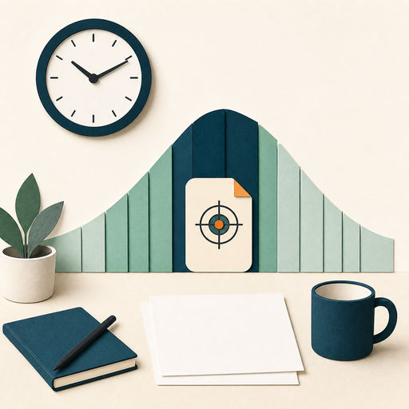
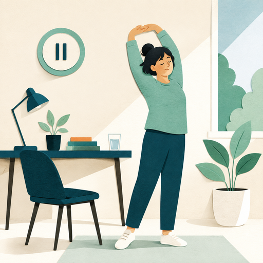
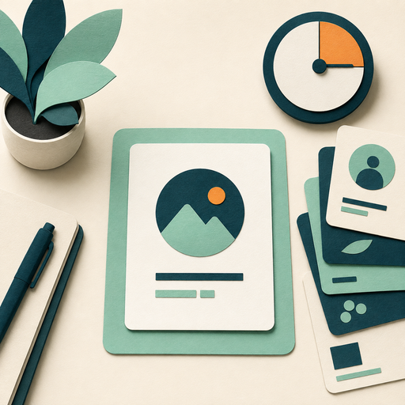

What may influence energy and focus?
Explore the factors that can shape your energy and concentration throughout the day.
Time management is an individual mindset activity. When you discover your own productivity rhythm—how, when, and where you work best—you can use your time more effectively.

Your productivity rhythm is individual. Notice when your energy and attention change throughout the day so you can plan your work intentionally.
Energy levels fluctuate throughout the workday and influence concentration, clarity, and problem-solving.
Explore the factors that can shape your energy and concentration throughout the day.
Proper nutrition and hydration influence energy levels. Dehydration can increase fatigue and reduce alertness, while balanced nutrition supports steadier energy.
Insufficient or disrupted sleep can leave you groggy and less focused. Restful sleep supports increased daytime energy.
Chronic stress, anxiety, and depression can drain energy and make sustained concentration more difficult.
Energy levels tend to change with age. Your productivity rhythm may fluctuate differently from someone else’s.
Regular movement can increase vitality, while a sedentary routine may contribute to low energy.
Light, temperature, noise, and workspace conditions can affect alertness, comfort, and energy throughout the day.
Genetics, personality, lifestyle, and social preferences shape how people experience energy throughout the day.
Strategy
Schedule high-priority work that requires critical thinking or problem-solving when your attention and energy are strongest. Reserve routine or less complex work for periods when you are less engaged or focused.
Balance does not mean dividing time equally. It means making intentional choices about what matters in the time available.
Strategy
Regular breaks help protect your mental energy, sustain attention, and reduce the risk of burnout. Protecting capacity means noticing how much focus you can sustain and resetting before your attention is depleted.

A staff member notices their attention fading after sustained work, steps away from the screen for a short walk, and returns with a clearer mind instead of working until mistakes increase.
Strategy
The key is to detach from your desk and reset your mental energy. Skipping lunch breaks to complete extra work will only decrease your performance levels, and increase your chances of making mistakes.
A common misconception of effective time management is the skill of multitasking.

Compare the two approaches
Strategy
Organize your time so that each task will receive your full energy, rather than sharing this energy on various projects.